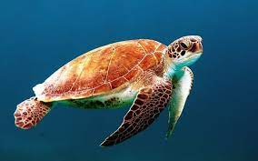

TORTUGA CAREY
La población ha disminuido hasta un 80% en los últimos años debido a la pesca
desmesurada en China y Japón. Sin embargo, sobrevive en las zonas tropicales. El
descenso de su población también se debe a la degradación de los arrecifes de coral, los
cuales son su principal alimento. En territorio mexicano se alberga en el Golfo de México,
en playas continentales e insulares de Veracruz, Campeche, Yucatán y Quintana Roo. En
ocasiones se les puede localizar en playas e islas de Michoacán, Jalisco, Sinaloa y Oaxaca.
 |